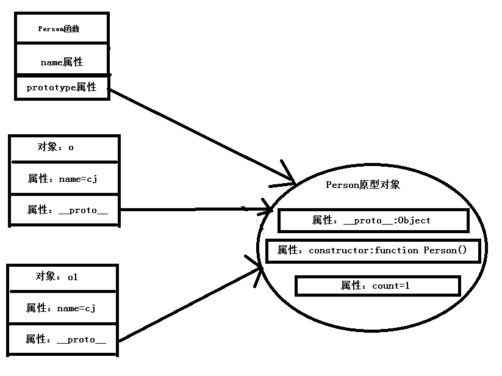

1. 前言
这节将介绍proto伪类的一些知识点，以及图解对象原型链
2. proto伪类
proto是一个伪类，实际代码不要使用它，因为在IE中它是不存在的。开发调试，或者是学习的时候可以使用它来加深对对象原型链的理解
<script>
function Person()
{
this.name = "cj";
}
Person.prototype.count = 1;
var o = new Person();
var o1 = new Person();
</script>
这段代码中o和o1对象是从Person创建来的，它有个count的原型属性。它在内存中的表现形式如图：

从图中可以总结出几点：
第一点：
创建对象会根据相应的构造器结构给对象划分新的内存区域，它们都共用一个原型对象内存区
第二点：
对象属性查找首先会找自身内存区的属性，找不到才继续找它原型对象上的属性。
第三点：
对象和原型对象之间的关联都是依靠proto属性来进行的。
第四点：
构造器结构与原型对象之间的关联是依靠prototype属性进行的，在JavaScript初级阶段也提过，prototype属性只有函数才有。
根据内存图理解了上面四点之后，下面的代码输出结果就很简单了。
<script>
function Person()
{
this.name = "cj";
}
Person.prototype.count = 1;
var o = new Person();
var o1 = new Person();
console.log(o.count);
Person.prototype.count = 10;
console.log(o1.count);
Person.prototype = {xx:"xx"};
console.log(o.xx);
var o2 = new Person();
console.log(o2.xx);
console.log(o2.count);
</script>
步骤：
首先输出对象o所指向原型对象上的count属性值：1
通过构造器的prototype属性修改了原型对象上的count值
因为，对象o、o1和Peroson.prototype都指向一块内存区，所以这里输出还是：1
接着构造器的prototype属性改变了内存指向，这块内存中有xx属性
这时候 对象o和o1指向的还是原来的内存区，Peroson.prototype指向了新的内存区，所以o.xx输出：undefined
接着又使用Person函数创建了对象o2，此时对象o2和Peroson.prototype 都指向了新的内存区
新的内存区有属性xx,所以输出：xx
新的内存区没有属性count，所以输出：undefined
最终的输出顺序：1 10 undefined xx undefined
3. 总结
- 通过图解理解构造器的prototype属性和对象的proto隐藏属性之间的指向关系